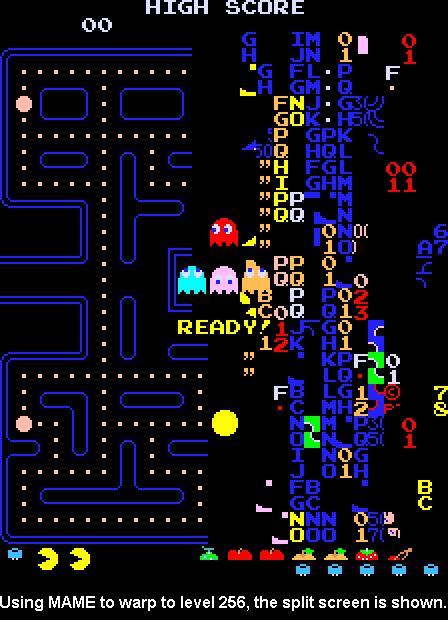

Pac Man
Pac-Man was released in 1980 as an arcade game by Namco.
Players guide the titular yellow character around a maze, eating pellets while avoiding ghosts.
With its simple yet addictive gameplay, Pac-Man became an iconic classic and one of the most successful
video games of all time.

Controls and Endgame
Use joystick or arrow keys to move Pac-Man through the maze.
Navigate Pac-Man to eat all pellets while avoiding ghosts.
Eat power pellets to temporarily turn ghosts blue and chase them.
Endgame: When all pellets in a maze are eaten, Pac-Man advances to next level. As levels progress, ghosts speed up and become more aggressive.
Player beats level 256 by clearing last pellets, then game loops back to first level. The right side of screen displays "split-screen" and halves gameplay.
The game has no true end, increasing in difficulty until all Pac-Man's lives are lost. High scores are the goal as players master timing, strategy, and patterns.
